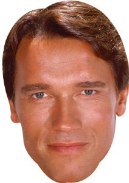
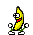
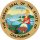

Michamoro Schwarzenegger
hola soy sebastian

Arnold Alois Schwarzenegger Pronunciación inglesa: /ˈʃwɔrtsənɛɡər/, alemana: [ˈaɐnɔlt ˈalɔʏs ˈʃvaɐtsənˌʔɛɡɐ] (Graz,
Austria Austria, 30 de julio de 1947) es un exfisicoculturista , actor y politico austriaco nacionalizado estadounidense que
ejerció como trigésimo octavo gobernador del estado de California desde 2003 hasta 2011.
Arnold Schwarzenegger

Arnold Schwarzenegger en febrero de 2015.

38º gobernador de California
17 de noviembre de 2003-1 de enero de 2011
|
Vicegobernador
|
Abel Maldonado Jr.1
|
|
Predecesor
|
Gray Davis
|
|
Sucesor
|
Jerry Brown
|
Presidente del Consejo de Salud Física
y Deportes
20 de enero de 1990-20 de enero de 1993
|
Presidente
|
George H. W. Bush
|
|
Schwarzenegger gano fama en todo el mundo como un icono de las peliculas de accion de Hollywood, conocido
por sus papeles protagonistas en peliculas como Conan the Barbarian,Commando , Terminator, Total Recall
(Desafio total en España y El vengador del futuro en Hispanoamerica )The Expendables (Los Mercenarios en
España y Los indestructibles en Hispanoamerica) y Predator . Fue apodado el roble austríaco y el roble de Estiria en
sus días de culturismo, Arnie durante su carrera como actor y más recientemente el Governator (una contracción
de Governor y Terminator).4 Además, esta en el WWE Hall of Fame , ingresando en 2015, y fue anunciado como
personaje jugable "The Terminator" en WWE 2K16
Indice [ocultar]
1 Primeros años
1.1 Juventud
1.2 Traslado a los Estados Unidos
2 Carrera de culturista
2.1 Mr. Olympia
2.2 Uso de anabolizantes
3 Carrera de actor
3.1 Doblaje
4 Carrera política
4.1 Comienzos
4.2 Gobernador de California
4.2.1 Elecciones
5 Vida privada
6 Negocios
6.1 Planet Hollywood
6.2 Ganancias netas
7 Filmografía completa
8 Títulos de halterofilia y culturismo
9 Premios cinematográficos
9.1 Globos de Oro
10 Referencias
11 Enlaces externos
|
Arnold Schwarzenegger manejando...